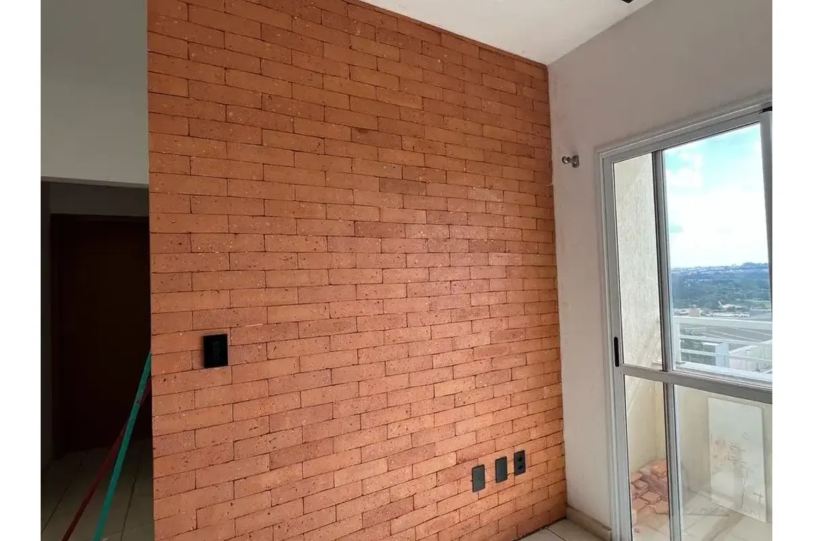

O revestimento cerâmico é um dos setores mais normatizados da construção civil brasileira — e também um dos menos compreendidos fora do meio técnico. Arquitetos, mestres de obra e consumidores finais frequentemente especificam material sem saber que existe um conjunto de normas ABNT que rege desde a espessura da junta até a resistência ao desgaste da superfície. Este guia reúne, num só lugar, as principais normas que qualquer projeto de revestimento em fachada, parede interna ou piso deveria respeitar.
NBR 13755 — revestimento de fachadas e paredes externas
A NBR 13755 é a norma mais citada do setor porque trata especificamente da aplicação de placas cerâmicas em fachadas e paredes externas com argamassa colante. Ela estabelece exigências para projeto, execução, inspeção e aceitação — ou seja, cobre o processo inteiro, não só o material. Uma atualização de 2017 passou a admitir peças de qualquer dimensão, com recomendações de técnica que variam conforme o tamanho da placa, e formalizou que o rejunte deve ser do tipo ARII, com largura mínima de 5 mm (exceto pastilhas, que seguem recomendação do fabricante).
Um ponto pouco conhecido: a norma também trata do preenchimento do verso (tardoz) da placa com argamassa colante. Preenchimento insuficiente é uma das causas mais comuns de descolamento de peças em fachadas — o problema raramente está na peça em si, e sim na técnica de assentamento.
NBR 13754 — paredes internas
Equivalente à 13755, mas para ambientes internos. Como as paredes internas não enfrentam exposição direta a sol, chuva e variação térmica extrema, os critérios de junta de movimentação e proteção do substrato são menos rigorosos — mas a exigência de argamassa colante adequada ao local de aplicação (interno x externo, residencial x comercial pesado) continua valendo integralmente.
Se o profissional que vai instalar seu revestimento nunca mencionou "argamassa colante conforme NBR 14081" ou "junta ARII", vale perguntar. São referências básicas de quem realmente segue a norma — não é preciosismo técnico, é o que garante que a peça não solte da parede em 2 anos.
NBR 15270 — blocos e tijolos cerâmicos
Revisada em 2017, a NBR 15270 substituiu normas antigas (NBR 7170, 6460 e 8041) e passou a especificar em duas partes: requisitos dimensionais e propriedades físicas/mecânicas (Parte 1), e métodos de ensaio (Parte 2). A revisão ampliou as opções disponíveis ao setor — incluindo blocos estruturais de 9 cm de largura e tijolos maciços já adequados à Portaria Inmetro 558/2013 — e reorganizou o texto para facilitar a comparação entre produtos de fabricantes diferentes.

PEI e coeficiente de atrito: o que esses números significam
Duas siglas aparecem com frequência em fichas técnicas de revestimento e geram confusão:
PEI (Porcelain Enamel Institute) mede a resistência ao desgaste superficial por abrasão, numa escala que vai de PEI 0 (uso exclusivo em parede, sem tráfego) a PEI 5 (tráfego intenso, áreas comerciais pesadas). Quanto maior o número, mais resistente à passagem de pessoas — mas isso é relevante para piso, não para revestimento de parede, onde esse desgaste praticamente não ocorre.
Coeficiente de atrito mede a resistência ao escorregamento. A NBR 13818 considera antiderrapante qualquer piso com coeficiente igual ou superior a 0,4 — informação que, por norma, deve constar na embalagem do produto. Vale notar que atrito mais alto geralmente significa superfície mais áspera, o que facilita o escorregamento mas dificulta a limpeza — um trade-off técnico, não um defeito.
Normas de argamassa colante (NBR 14081 a 14086)
Este bloco de normas específicas trata exclusivamente da argamassa colante industrializada — os requisitos que ela precisa cumprir (14081), como preparar o substrato-padrão para ensaios (14082), o tempo em aberto antes de perder a aderência (14083), a resistência de aderência à tração (14084), o deslizamento (14085) e a densidade de massa aparente (14086). Para quem contrata uma instalação, o relevante é simples: a argamassa precisa ser especificada de acordo com o local (parede ou piso, interno ou externo) e o uso do ambiente (residencial, comercial leve ou pesado) — usar a argamassa errada é uma causa comum, e evitável, de problemas anos depois da instalação.